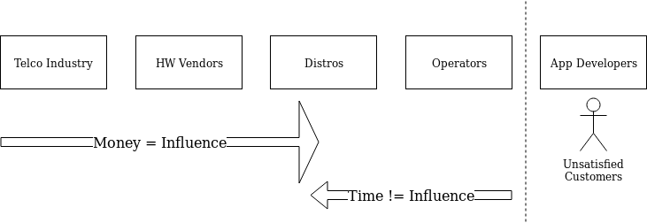

The project is still quite healthy and is following the usual hype curve: OpenStack is finally mature enough that it’s less interesting to talk about, so it’s understandable that people think something happened.
The folks asking me this question are generally curios and good intentioned, and I think my answer says a lot about my professional background, so even during an interview I indulge in a short ramble.
I know, I know … I should have written about it at the time, but I had other things going on and wasn’t making space in my life to write. So I’ve decided to revisit the topic today. Next time someone asks me, I’ll just point them here 😉
We all knew that, for the long-term success of the OpenStack ecosystem, we needed a hyper-scale OpenStack public cloud to succeed, and a healthy set of SaaS applications to be built upon the IaaS/PaaS layers that we had. We knew there needed to be at more than one hyperscale implementation to avoid a gravity problem (in the early days, that was RackSpace).
Publicly, lots of folks were talking about this; common headlines compared OpenStack to AWS, and every VC and analyst wanted to know if it was ready for the Enterprise yet. I even sat on a panel to discuss this very question! (edit: updated with link)
But over time, this key component of our success never materialized. Why was that?
Back in 2014 I was working at HP Cloud. Money was pouring into OpenStack and we were all riding high on that. This was the year that OpenStack hype peaked, and I will never forget the Carnival at the Paris Summit. Tre magnifique! From outside, however, it may not have been obvious that this was coming from Telcos and Hardware Vendors seeking to influence the direction of OpenStack. Specifically, these companies wanted to create the technological basis for integrated private cloud solutions they could take to market quickly.
Privately, we could see that these market forces were opposed to actually achieving hyperscale. The Big Tent was a bold move to try and address some of these issues. We (that is, the Technical Committee) did what we could, but in the end we couldn’t fix the problem because we didn’t control the purse strings.
You see, almost every company contributing substantially to OpenStack at that time relied on Enterprise customers. That’s a nice way of saying well-known brands who spend a lot of money on each other every year. Unlike the hyper-scalers, Enterprise customers generally do not have an interest in building their own servers or writing their own switch firmware. They buy these things (and the support contracts for them) from other Enterprise companies that make them, and those companies want to keep making money from these deals.
Meanwhile, distros and operators struggled to make OpenStack installable so that they could roll out deployments to satisfy the market demand. And the Enterprise demand for new private cloud regions was incredibly high! A lot of internal pressure was being put on the OpenStack developer teams (at the Distros, Telco’s, HW vendors) to create software that worked well at a scale these Enterprise Customers needed, roughly in the 1,000’s to 10,000’s of cores with a small number of regions for geographic resiliency.
However, building a distributed system for a scale of 10,000 cores is fundamentally different than building for 10,000,000 cores. Besides just changing the code, scaling up by another three orders of magnitude requires fundamental changes in how any business operate. The margins would need to become much, much smaller. Gone would be the 3rd party support contracts, the B2B deals, the value-added software – the grease in the sales’ teams wheels. The enterprise hardware & software giants were not willing to restructure their businesses that much, and the organic growth of companies like OVH was too slow (even though I think they are still on the right track).
Creating a viable, open source, hyperscale cloud software solution was against the best interest of the companies most heavily investing in OpenStack’s development.
In my usual fashion, I tried to draw this on a napkin one day. The original is long since lost, so I’ve redrawn it from memory below.

Influence was flowing from the wrong direction. Product management within the Telco, Hardware, and Distro space — that is, companies like ATT, Cisco, Dell, and RedHat — were pouring in money to pay developers to have influence and write code, funding lavish parties and inflating salaries (in full disclosure, I certainly enjoyed the parties, and while I got paid well, I didn’t make out nearly as well as a lot of folks did). Meanwhile, Operators were getting further and further behind the release-train, had little voice (they were busy operating the clouds, after all) … and the end-users of the cloud (app developers) had almost no voice at all.
Eventually, revenues would need to come from the growth of supported businesses on top of the cloud (ie, app developers’ success), but we couldn’t get there because operators weren’t able to scale up enough, or maintain cross-cloud compatibility well enough, for a healthy market to flourish on top of the cloud. Everyone on the left-hand side of that diagram was too busy trying to differentiate to win deals against each other.
With this going on, the upstream technical team leads — who could see the problem — were lobbying inside our respective companies to change the priorities. We convinced some managers and executives to get onboard with tactical investments in code and infrastructure, but we couldn’t get enough backing for the larger changes that were needed.
As long as the financial influencers were focused on the business models of mid-sized customers (MSP’s and Enterprise markets), they were not willing to invest in the massive strategic efforts needed to make OpenStack competitive in the hyperscale market. The vast majority of developers, whose project goals were dictated by PMs and executives within their employers, were thus busy driving features (designed to take advantage of “value-added integrations”, the grease of the Enterprise sales cycle) into the codebase, and no one could fix the core issues that had become apparent to all the deployers who were busily trying to scale up their clouds.
You see, the successful hyperscalers had already removed middleware marginal cost. Google, AWS, even Facebook, all make their own servers, switches, storage, etc. They fork open source projects then pay developers to maintain and improve private versions so that they can stay ahead (some projects are now trying to prevent this). These companies pioneered scale by shaving the costs off their infrastructure, but those efficiencies have not made it back to the Enterprise market. They became the behemoths they are, in no small part, by building processes, teams, and hardware to break any reliance on 3rd parties for software, hardware, or support.
So, you see, creating a viable, open source, hyperscale cloud software solution was against the best interest of the companies most heavily investing in OpenStack’s development.
When you’re looking at other cloud products, think about similar conflicts of interest that might be affecting your favorite spokespersons today… (I’m looking at you, kubernetes)
Those of us who joined OpenStack early and dreamed big, well, we had no chance of building those dreams within OpenStack. It became something less hype-worthy but perhaps even more useful: an extensible tool for mid-scale infrastructure automation, powering thousands of businesses around the world, including many non-profit and public-good institutions.
And – just to be clear – I’m very glad to have been able to help in my small way to build a tool that has been used so widely for good.
I am publishing this now in the hope that it can serve as a warning to everyone out there who is investing in Kubernetes. You’ll never be able to run it as effectively, at the same scale, as GKE does – unless you also invest in a holistic change to your organization.
Even then, if you’re using Kubernetes, you probably won’t succeed, because it isn’t in Google’s best interest to let anyone else actually compete with GKE.
And that’s probably OK. In fact, OpenStack + Kubernetes is probably just fine for what ever you’re building, and neither project is going anywhere any time soon.
If another company wants to stand a chance in the hyperscale space, it will need to look holistically at its entire business apparatus, and either repeat the Google/Facebook/Amazon model of privatizing open source and investing in your own server fabrication or band together with other vertically-focused, open source businesses in order to compete.
If you do that, please drop me a line.
I’d love to help.